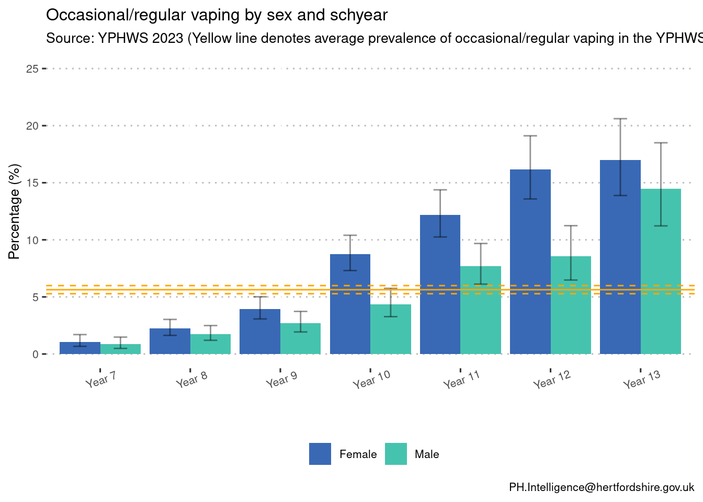
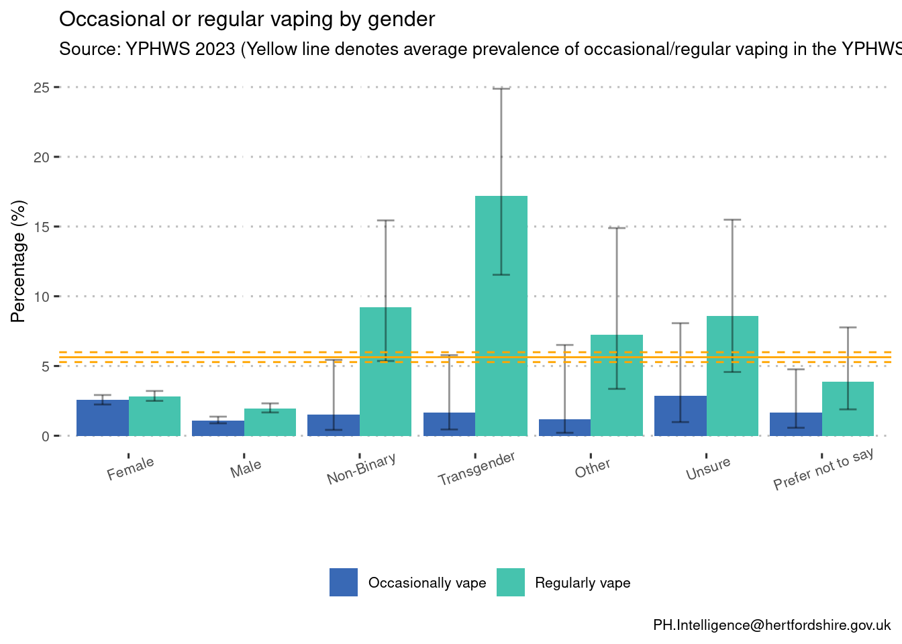
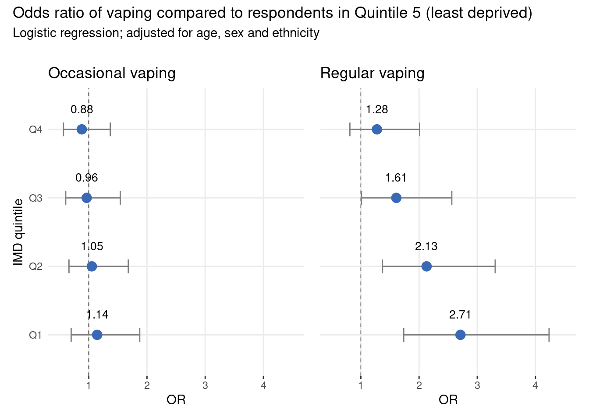
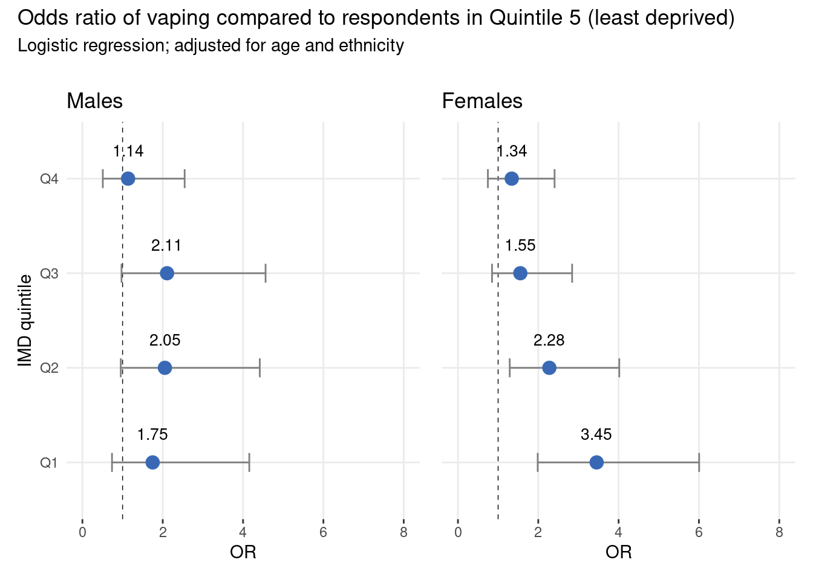
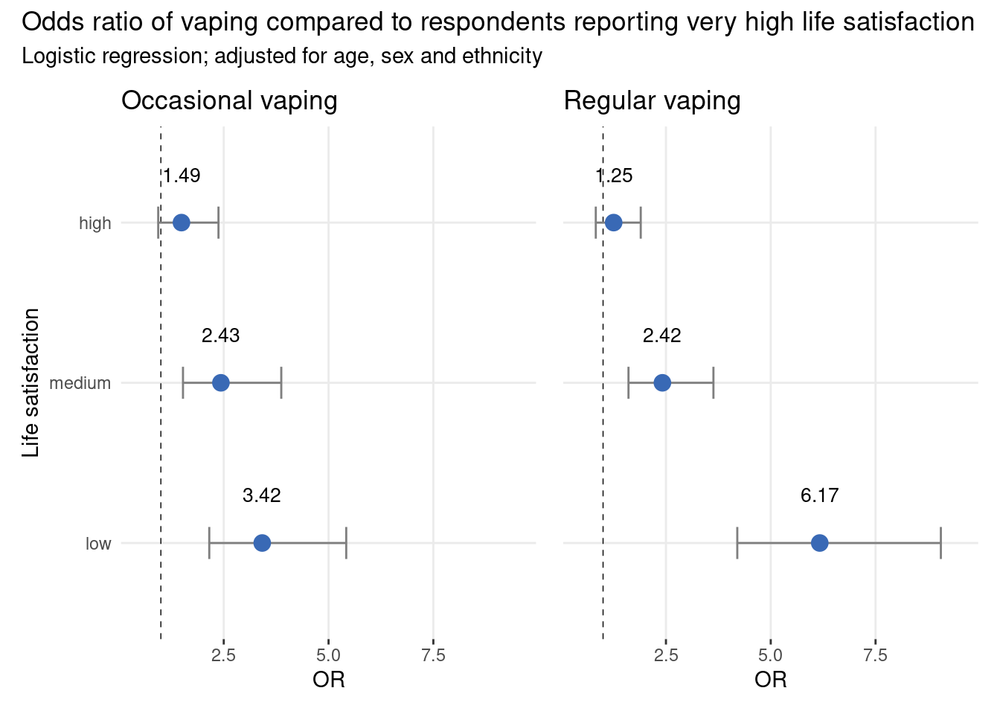
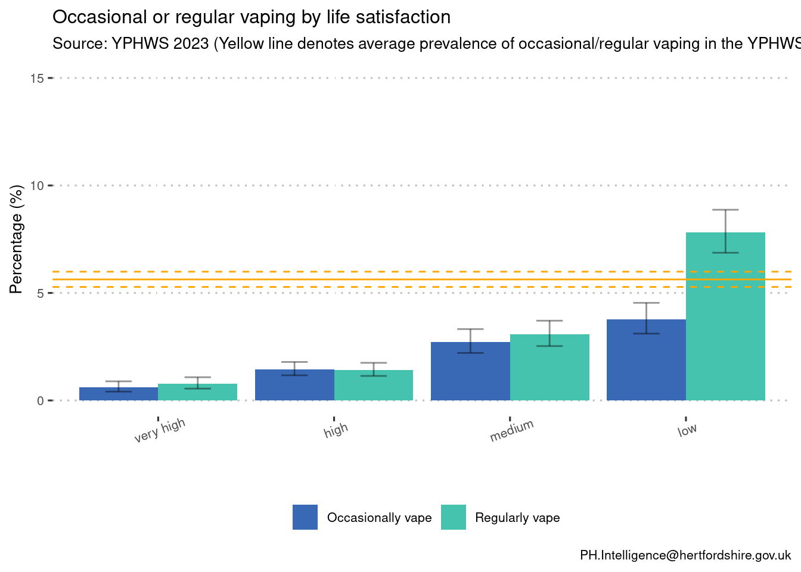

| Response | Number | % |
|---|---|---|
| I have never vaped | 13635 | 84.6 |
| I have vaped once or twice | 1395 | 8.7 |
| I used to vape, but I don’t now | 355 | 2.2 |
| I vape occasionally (less than once a week) | 305 | 1.9 |
| I vape regularly (once a week or more) | 430 | 2.7 |
Abstract
The most recent evidence suggests youth vaping has plateaued, with 7.9% of young people vaping regularly. However, previous rises in rates of vaping among young people prompted government intervention to curb accessibility and appeal to minors.
Concerns around vaping in young people included potential “gateway” effect to tobacco smoking, although evidence for this is lacking. Other concerns are specific to vaping in schools, which includes disruption and the use of e- cigarettes as a means of emotional self-regulation.
Motivations for vaping vary among young people in England, including for fun, curiosity, or to deal with stress or anxiety. While awareness of the associated health risks is relatively high, misconceptions persist, contributing to the normalisation of vaping among adolescents.
Health inequalities are an important area, with the proportion of adults who smoke tobacco in the most deprived areas of England and Wales was more than three times higher than in the least deprived areas.. Little evidence is available on the association between deprivation and vaping, particularly in young people. However, associations between socioeconomic disadvantage and vaping among young people (10-to-15) have been observed.
In the data collected for the latest YPHWS cohort (2023), there were 16120 students out of a total of 16290 students who answered the question “Thinking about vaping / e-cigarettes only, which of the following best describes you?” The breakdown of the responses is shown in the table below:
We analysed the relationship between levels of deprivation (IMD Quintile) and young peoples’ propensity to vape. We found that students from more deprived areas were more likely to report vaping regularly than those from less deprived areas. In addition, those reporting lower life satisfaction were more likely to report both occasionally and regularly vaping.
Methods
Through YPHWS, we asked pupils about their vaping behaviour: “Thinking about vaping / e-cigarettes only, which of the following best describes you?”. Based on responses to this question we categorised pupils as those who do not occasionally or regularly vape, those who regularly vape, those who occasionally vape, and a combined group of occasional and regular vapers.
The pupils reported home postcode was used to classify level of deprivation. Deprivation was categorised into quintiles based on the Index of Multiple Deprivation (IMD).
For the analysis on level of deprivation and propensity to vape we perform a logistic regression, adjusting for relevant covariates. This is a form of regression analysis where the response variable is binary (i.e. Yes/No). From the logistic regression, we can evaluate what predictors have an effect on the outcome of the response variable. The estimate of association we report here is the Odds Ratio (OR)
As the response variable for life satisfaction has more than two (i.e non-binary) choices, we instead perform a chi-squared test for this part of the analysis.
Additional details on the methodology
The analysis is cross-sectional, and does not confirm causation. We have cannot test if the predictor causes the outcome with this data or analysis.
In the logistic regression outputs below, there is a baseline/reference group (IMD Quintile 5 - least deprived), which other groups are compared against. The logistic regression determines whether each group is more or less likely to have a certain characteristic (e.g. to have a mental health condition), compared to the reference group. Each group has an Odds Ratio and an associated confidence interval, in which we can be 95% certain the real value lies in. Groups can be determined to be significantly different from one another if the intervals do not overlap, or the baseline group does not fall within the groups interval.
A statistically significant relationship between the explanatory and response variables is outlined when the p-value is lower than the 0.05 threshold. In this case, the p-value is small enough to reject the null hypothesis of the conducted test, which is that there is no relationship between the variables.
Results
The plot below visualises the differences in vaping propensity across gender and school year. As we might expect, the percentage of pupils who reported occasional or regular vaping appears to increase with school years, regardless of gender. Notably, females consistently showed a higher likelihood of reporting vaping compared to males. This difference becomes statistically significant from years 9 through 11, but becomes non-significant in year 12.

Additional gender breakdown
Plotting the relative percentage of occasional and regular vaping across all reported genders shows higher levels of regular vaping in genders other than male and female. Note: the numbers of those identifying as genders other than male and female are low, and therefore caution is advised when interpreting this plot.

Occasional vs regular vaping
The likelihood of vaping (occasional and regular) increased linearly for pupils from more deprived areas, compared to those from the least deprived area. When examining occasional and regular vapers separately, this association with deprivation was not present among occasional vapers. However, the association was much stronger when considering regular vaping only. Specifically, pupils in Quintiles 3, 4, and 5 (the most deprived) had ORs of 1.61, 2.13, and 2.71, respectively. This means that young people from the most deprived areas in Hertfordshire were 2.71 times more likely to regularly vape compared with the least deprived areas. Note: the wide confidence intervals observed are due to small sample sizes. .

Gender and deprivation
When examining the odds of combined vaping (occasional and regular) by IMD quintiles separately for males and females, distinct patterns emerged. Among females, there was a clear trend: lower IMD quintiles were associated with higher odds of vaping. Specifically, in Quintile 2 (Q2), the OR was 1.48. In Quintile 1 (the most deprived), the OR increased to 1.99, indicating a significantly higher likelihood of vaping. However, in males, no significant odds ratios were observed, and confidence intervals were wider due to smaller sample sizes.

Additional gender analysis
In repeated analysis focusing on occasional vaping only, no associations were observed in either males or females. However, when examining regular vaping separately, the associations became more pronounced among females. Additionally, the odds for males increased, although they still did not reach statistical significance.

Life satisfaction
The odds of vaping, both occasional and regular, increased for pupils reporting lower life satisfaction, compared to those reporting very high life satisfaction. Those reporting low life satisfaction were 3.42 times more likely to occasionally vape, and 6.17 times more likely to regularly vape, compared to those reporting very high life satisfaction.

Life satisfaction breakdown
Plotting the relative percentage of occasional and regular vaping across all levels of life satisfaction show that the highest proportion of vaping is regular vapers with low life satisfaction.

Conclusions
Among young people, those living in more deprived areas were more likely to vape. This trend was particularly pronounced for females, with those living in the most deprived areas three times more likely to vape than those living in the least deprived areas. In addition,compared to those reporting very high life satisfaction, those reporting low life satisfaction were more than three and six times more likely to occasionally and regularly vape, respectively.